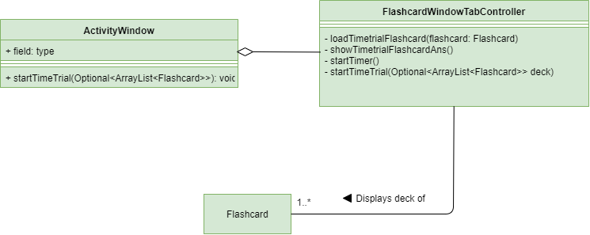

About The Project
My team of 4 Computer Science students and I were tasked with enhancing a basic command line interface desktop address book application for our CS2103T module, and we chose to modify it into a 3-in-1 application that serves as a tool to aid revision called StudyBuddy. This application allows students to store and utilize flashcards, create notes that can be later used to generate a reference to create a cheat sheet.
This is what our project looks like:

Figure 1. The graphical user interface for StudyBuddyPro.
Callouts Signs
Please do refer to the signs below as they are used throughout the document.
|
Indicates information that are to be adhere as potential problems may be encountered if you are not careful. |
|
Indicates information that are crucial to understand so that you will be able to follow the flow of the document. |
|
Indicates information that are note-worthy. Do read them for more information and better understandings. |
Summary of contributions
-
Major enhancement: added ability to start a time trial of flashcards.
-
What it does: The
timetrialcommand initializes a test whereby the user will be tested a sequence of flashcards. -
Justification: Pushes the user to test his understanding / familiarity of a certain topic.
-
Highlights: This enhancement works with existing as well as future commands. An in-depth analysis of design alternatives was necessary to implement the feature in a way that doesn’t disrupt other features. The implementation was also challenging because there was a need to read up on an existing API that I did not have prior experience in.
-
Credits: Usage of the timeline api and linking the timer to a label was inspired by: https://asgteach.com/2011/10/javafx-animation-and-binding-simple-countdown-timer-2/
-
-
Minor enhancement: Designed the overall GUI of the StudyBuddyPro application.
-
Code contributed: [Functional code] [Test code] {give links to collated code files}
-
Other contributions:
-
Project management:
-
Facilitated discussion of the overall direction of the application in v1.1.
-
-
Developing existing features:
-
Enhancements to existing features:
-
Documentation:
-
Added the command summary for the team(#338).
-
-
Community:
-
Reported bugs and offered suggestions for the other team during the Practical Exam dry run.
-
Contributions to the User Guide
Given below are sections I contributed to the User Guide. They showcase my ability to write documentation targeting end-users. |
Time Trial: timetrial
Starts a time trial for flashcards with tag <TAG> for <TIME> seconds per flashcard.
Format: timetrial tag/TAG...
Example usage: timetrial cs2103tuml hard
Expected output: Time trial started
-
At least one tag must be specified.
-
If more than one tag is specified, selects all flashcards that contains all of the specified tags.
-
Default <TIME> will be 5 seconds.
-
Answer will be flashed for 3 seconds.
-
If a flashcard command (other than
show) is inputted during the time trial, the time trial will be terminated and the inputted command will be executed. -
Executing
showwill reveal the answer of the flashcard in advance, but will not terminate the time trial.
Command Summary
Global Commands (Can be executed in any mode)
-
Switch :
switch MODE
e.gswitch fc -
Filter All :
filterall tag/TAG…
e.gfilterall tag/cs2103tuml tag/difficult -
List tags :
taglist -
Help :
help -
List :
list -
Exit :
exit
Flashcard Commands
-
Add :
add q/QUESTION a/ANSWER t/TITLE [tag/TAG]…
e.g.add q/What is 100 Binary in its Decimal form? a/4 t/Binary Stuff tag/CS2100 -
Delete :
delete INDEXe.gdelete 1 -
Filter :
filter tag/TAG…
e.gfilter cs2103tuml -
View :
view INDEX
e.gview 1 -
List :
list -
Show :
show -
Remind :
remind
Note Commands
-
Add :
add t/TITLE c/CONTENT tag/TAG…
e.g.add t/Pipelining Definition c/Pipelining is a process where a processor executes multiple processes simultaneously. tag/cs2100 -
Delete :
delete INDEXe.gdelete 1 -
View :
view INDEX
e.gview 1 -
Viewing a raw note :
viewraw INDEX
e.gviewraw 3 -
Filter :
filter tag/TAG…
e.gfilter tag/hard tag/cs2100 -
List :
list
CheatSheet Commands
-
Add :
add t/TITLE [tag/TAG]…
e.g.add t/CS2100 Midterm CheatSheet tag/cs2100midterm -
Delete :
delete INDEXe.gdelete 1 -
Edit :
edit INDEX t/TITLE tag/TAG…
e.gedit 8 t/cs2100 final cheatsheet tag/formula -
Show :
show INDEX
e.gshow 4 -
View :
view INDEX
e.gview 1 -
Filter :
filter tag/TAG…
e.gfilter tag/hard tag/cs2100 -
List :
list
Contributions to the Developer Guide
Given below are sections I contributed to the Developer Guide. They showcase my ability to write technical documentation and the technical depth of my contributions to the project. |
Flashcards Time Trial Feature
| The following commands assume that the user is in the flashcard mode. |
Implementation
-
The time trial mechanism is facilitated by the
FlashcardTabWindowController, and mainly uses theTimeline,KeyFrameandKeyValueclass from the JavaFX package to support its functionality.The following figure shows a class diagram of the relevant classes of the time trial feature.
The following figure is an activity diagram of the flow of events when a user attempts to start a time trial.

-
Given below is an example usage scenario and how the time trial mechanism behaves at each step.
-
Upon initialization of the StudyBuddy and switching to the Flashcard window, the
StudyBuddyParser’s function enum will be set to parseFlashcardcommands. -
The user executes (timetrial cs2100), and the
StartTimeTrialCommandretrieves a List of flashcards with the associatedTagthrough theModel#getTaggedFlashcards, which is then passed into theFlashcardTabWindowController. -
The
FlashcardTabWindowControllerthen calls theFlashcardTabWindowController#startTimeTrial, which in turns construct aTimelinewith the following added for 3 flashcards:-
A
KeyFrameto call theFlashcardTabWindowController#loadTimeTrialmethod, which displays the question of the flashcard on the window, with aKeyValuethat starts the timer on the screen. -
A
KeyFrameto call theFlashcardTabWindowController#showFlashcardAnsmethod, which hides the Timer and flashes the answer of the flashcard for a set period of time. -
A
KeyFrameis then added to the timeline to call theFlashcardTabWindowController#resetViewsmethod, which in turn empties the qnsTextArea and ansTextArea. [TO BE REFORMATTED]
-
The following figure shows the sequence diagram of when the command timetrial cs2103t is executed.

Design Considerations
Aspect: How the timetrial is implemented
-
Alternative 1 (current choice): 1. Using the
TimeLineclass to set the timer object.-
Pros: Tidier and easier to understand.
-
Cons: Have to read up on the API and learn about the relevant classes such as
KeyFrameandKeyValue
-
-
Alternative 2: Looping
Thread.sleep()to set the timer-
Pros: Easier to implement
-
Cons: Code will be messier and harder to read
-
Aspect: How to continue the time trial
-
Alternative 1 (current choice): Each flashcard and its’ respective answer is displayed for a set period of time before the next flashcard
-
Pros: Easier to implement
-
Cons: Inflexible as user can only view the answer for a set amount of time
-
-
Alternative 2: Allowing users to input commands to display the flashcard answer / move on to the next flashcard
-
Pros: Better flow of time trial feature and improved user experience
-
Cons: Hard to implement
-
[Proposed] Future improvements
-
Allowing users to set their own time limit for each flashcard in the time trial mode
-
Command will be inputted to set the duration of the timer for each flashcard
-
-
Allowing users to decide when to move on to the next flashcard
-
Question will still be shown for a fixed period of time, but a command will be required to move on to the next flashcard instead of just flashing the answer for a set amount of time
-